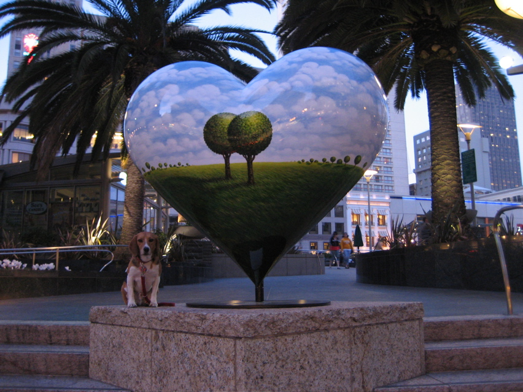

<--Previous Up Next-->

Single Tree/Double Tree
Each year around Valentine's Day new painted hearts appear around Union Square. This one is by Daniel Tousignant, one of the owners of a gallery in Jackson Square where Nick Dong had an exhibit last fall.